- Главная
- Новости
Новости компании
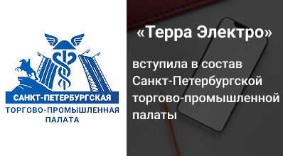
Вступление в Санкт-Петербургскую торгово-промышленную палату
Компания стала членом СПб ТПП. Для нас это признание и новые возможности для развития.
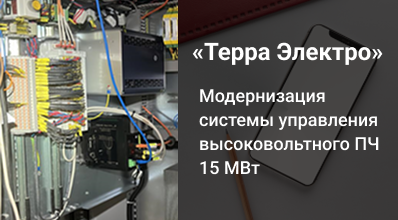
Модернизация системы управления высоковольтного ПЧ 15 МВт
Завершили свою часть ОКР по модернизации системы управления высоковольтного преобразователя частоты для испытательного стенда судостроительного завода.
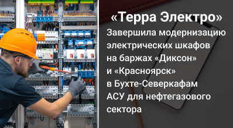
Модернизация электрических шкафов на баржах «Диксон» и «Красноярск»
Обновили электрические шкафы на двух баржах в порту Бухта-Северка для заказчика из Красноярска.
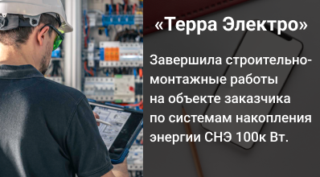
Завершены СМР на объекте с системой накопления энергии 100 кВт
Спроектировали и смонтировали систему накопления энергии мощностью 100 кВт на объекте заказчика в Москве.
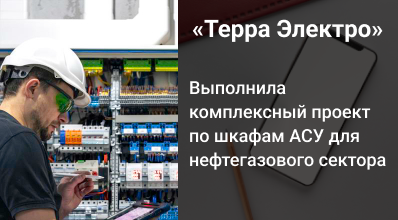
Комплексный проект по шкафам АСУ для нефтегазового сектора
В сжатые сроки спроектировали, собрали и смонтировали шкафы управления для технологических блоков нефтегазового заказчика.

Системы накопления электрической энергии
Почему качество электроэнергии падает по мере передачи по сетям и как системы накопления помогают с этим справиться.
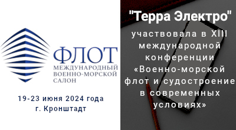
XII Международный военно-морской салон «Флот-2024»
Побывали на XII Международном военно-морском салоне и приняли участие в конференции о поставках и импортозамещении для отрасли.
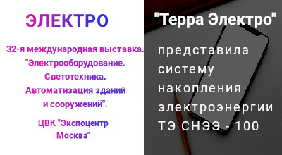
«Терра Электро» приняла участие в международной выставке «ЭЛЕКТРО 2024»
Показали на выставке систему накопления электроэнергии российского производства.
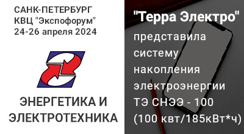
Терра Электро на выставке «Энергетика и электротехника 2024»
Представили систему накопления электроэнергии ТЭ-СНЭЭ-100 и провели переговоры с потенциальными заказчиками.
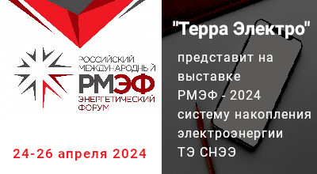
«Терра Электро» на выставке РМЭФ-2024 представит систему накопления электроэнергии
В рамках XII Российского международного энергетического форума компания покажет систему накопления электроэнергии.
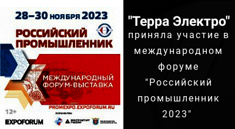
Российский промышленник 2023
По итогам форум-выставки компания отмечена дипломом за активное участие.
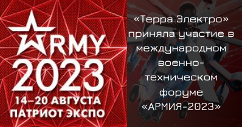
«Терра Электро» приняла участие в международном военно-техническом форуме «АРМИЯ-2023»
На форуме провели переговоры о поставках комплектующих производителей, попавших под санкции.
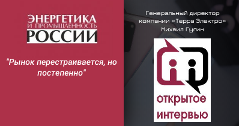
Рынок перестраивается, но постепенно
Михаил Гугин — о вызовах для энергетики и перспективах на 2023 год в журнале «Энергетика и промышленность России».
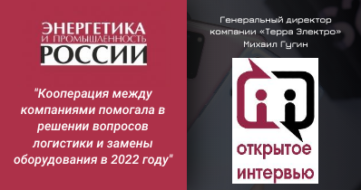
Кооперация между компаниями помогала в решении вопросов логистики и замены оборудования в 2022 году
Совместная работа по поиску решений стала одной из главных задач компании в 2022 году.
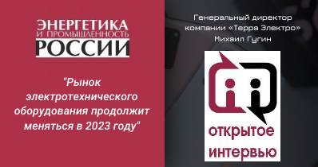
Рынок электротехнического оборудования продолжит меняться в 2023 году
Генеральный директор Михаил Гугин — о том, кто выиграет от перемен на рынке.
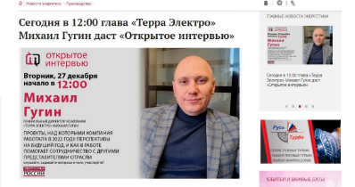
Открытое интервью генерального директора Михаила Гугина
Проекты 2022 года, перспективы на 2023 год и работа в условиях санкций — интервью газете «Энергетика и промышленность России».
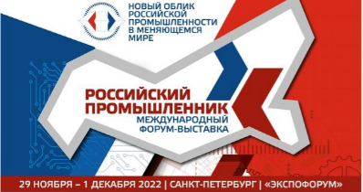
«Терра Электро» приняла участие в форуме «Российский промышленник 2022»
Провели переговоры с крупными промышленными предприятиями и подписали соглашения о сотрудничестве.
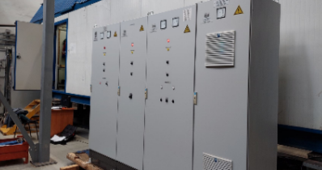
Для АО «Невский завод» был реализован проект по доработке шкафов управления преобразователя частоты
Заменили систему управления преобразователя частоты ПЧТ на шкаф с отечественным программным обеспечением.

10 лет компании «Терра Электро»
Обращение генерального директора и основателя компании к партнёрам и коллегам.
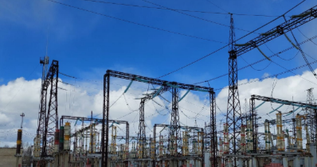
Модернизация ЛЭП 220 кВ
Установили устройство передачи аварийных сигналов и команд по оптоволоконной линии связи на предприятии бумагоделательной отрасли.
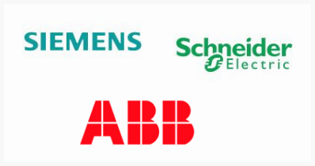
Поставка оборудования от производителей SIEMENS, Schneider Electric, ABB
Продолжаем поставлять оборудование производителей, ушедших с российского рынка, по параллельному импорту.
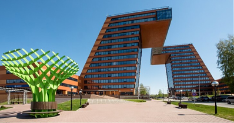
Открытие представительства «Терра Электро» в Новосибирске
Открыли офис и склад в Новосибирске, чтобы быстрее обрабатывать заказы.
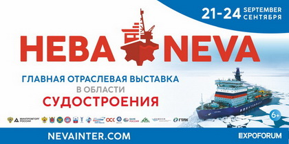
Выставка «Нева» в Санкт-Петербурге
Провели встречи с отечественными и зарубежными представителями гражданского судостроения.

Технический семинар и мастер-класс от компании IEK GROUP
Приняли участие в семинаре и мастер-классах «Актуальные новинки и решения IEK GROUP».
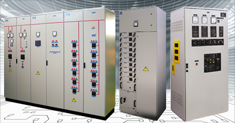
Производство низковольтного оборудования
Какие шкафы и щиты низковольтного оборудования мы производим.